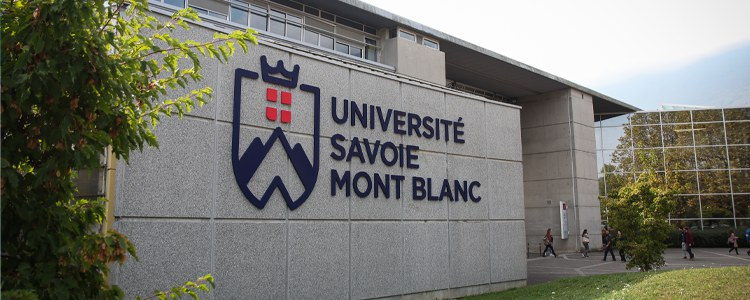

Licence STAPS – Ergonomie du sport et performance motrice
Université Savoie Mont Blanc · année d'échange à l'Université Laval
Une licence centrée sur la physiologie, la biomécanique et la recherche expérimentale, dont une année complète en échange universitaire au Québec.

Période
2023 – 2025
Lieu
Chambéry · Québec
Rôle
Admis directement en 2e année par validation des acquis (VAPP)
01
Une reprise d'études
Après quatre ans en gendarmerie, j'ai été admis directement en deuxième année de licence grâce à une validation des acquis professionnels et personnels (VAPP). Mon projet : construire une carrière autour de deux domaines que je considère complémentaires, la physiologie humaine et les sciences.
02
Ce que j'y ai appris
Physiologie, biomécanique et sciences du corps humain en contexte médical.
Mise en place de protocoles expérimentaux et collecte de données en laboratoire.
Recherche expérimentale, avec deux stages réalisés à mon initiative : au LIBM (Chambéry) puis au CIRRIS (Québec).
Autonomie et adaptation à un environnement universitaire nord-américain, en parallèle de jobs étudiants (agent de sécurité à Chambéry, préparateur physique à Québec).